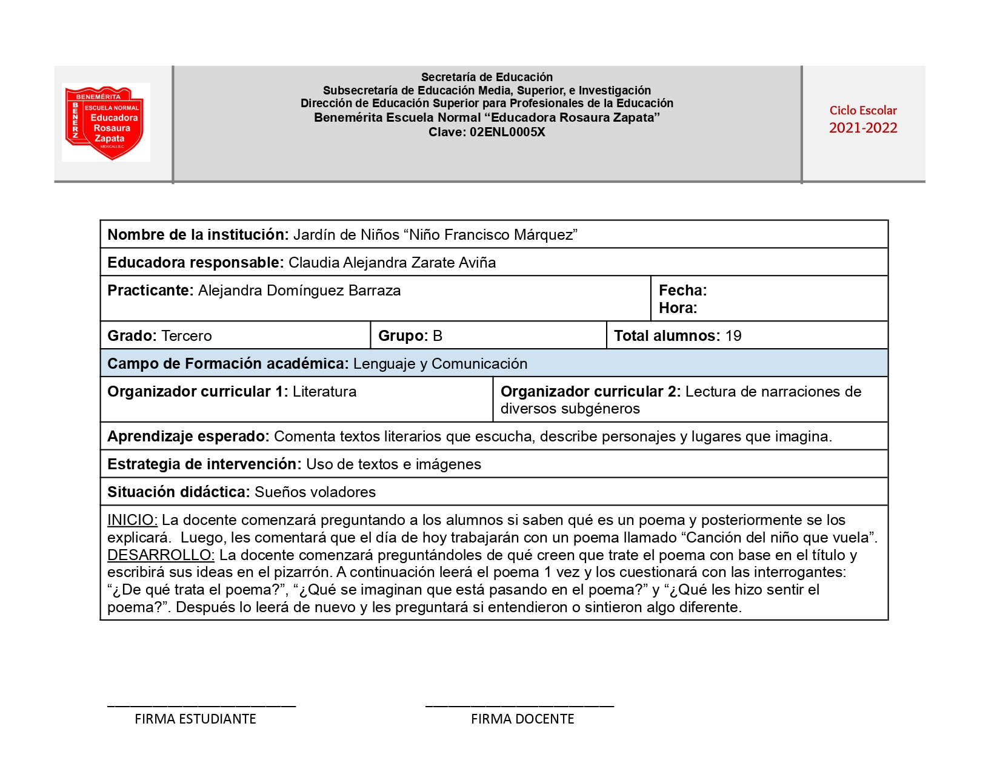
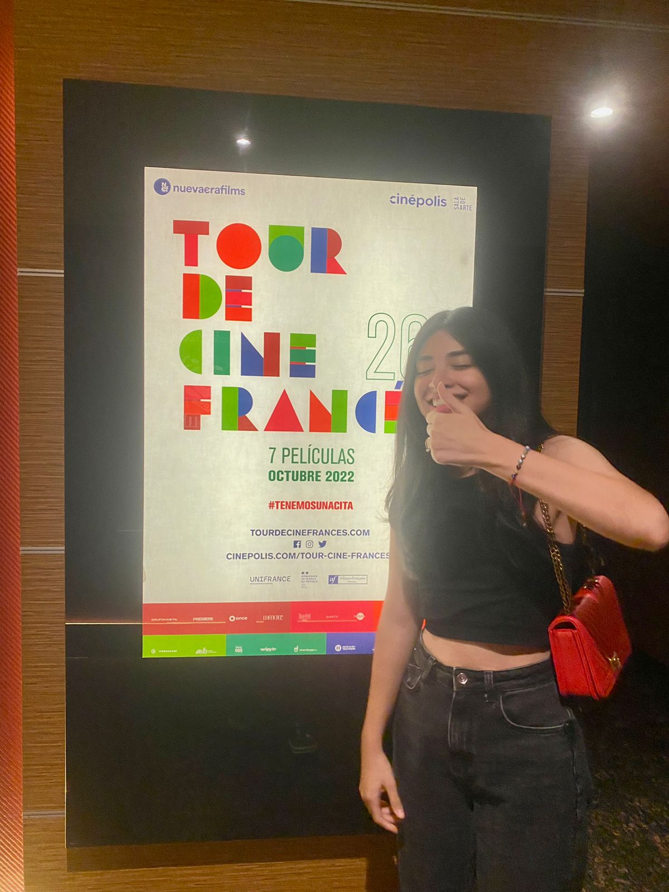
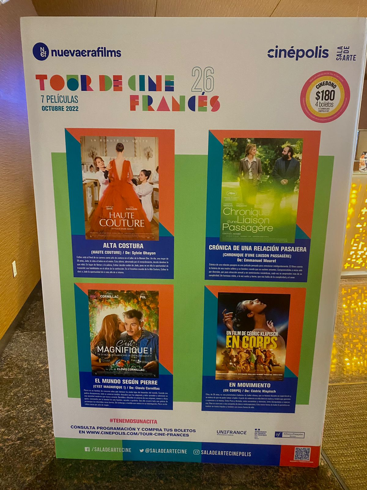

¿Quién soy? Mi nombre es Alejandra, soy una joven alegre, inteligente y muy hacendosa. He tenido una infinidad de pasatiempos y sigo en búsqueda de más experiencias que me apasionen. A continuación, te comparto un pedacito de mi.
¿Quién soy? Mi nombre es Alejandra, soy una joven alegre, inteligente y muy hacendosa. He tenido una infinidad de pasatiempos y sigo en búsqueda de más experiencias que me apasionen. A continuación, te comparto un pedacito de mi.
Desde mis primeros años, la lectura ha sido parte fundamental de mi vida; creo que no podría mencionar algo que considere mío sin mencionar la literatura, pues me la he apropiado por completo. Ha estado para mí en mis mejores, peores, y todavía peores momentos, y gracias a ello he comprobado que no hay nada que un buen libro no pueda curar. A continuación te comparto 4 libros que cambiaron mi vida; unos para bien y bueno, otro no tanto, pero tendrás que leerlos para darte cuenta de cuáles estoy hablando.

Cuenta la historia de Sebastián, quien después de quedar huérfano, queda al cargo de su aventurero tío Paco.
Dónde Comprar
Se centra en la vida de Jack, un escrito y alcohólico en recuperación que acepta un puesto como cuidador fuera de temporada del Hotel Overlook.
Dónde Comprar
La historia de un escritor y otro que se cree todo lo que el escritor escribe.
Dónde ComprarEsta presentación parte del folklore, que se entiende como el conjunto de expresiones culturales tradicionales de un pueblo, por lo que considero importante mantenerlo en cuenta a la hora de implementar literatura en preescolar. Es indispensable no perder el sentido de pertenencia y la tradición que se ha ido creando partiendo de las palabras contadas de una persona a otra, ya sea en cuentos, leyendas, chistes, retahílas y muchas otras.
Comprende los fundamentos de la literatura infantil y relacionar la literatura
actual en la evolución histórica de la producción para niñas y niños a partir del
goce de la lectura como experiencia estética.
A todos nos gustan los finales felices, pero la pregunta es ¿por qué?, ¿de dónde viene la necesidad de ver un final agradable
para todos los involucrados de la historia? Ahí está la respuesta, porque terminamos nosotros también involucrados en ella, nos
sentimos parte de ella y así como a nosotros, también a los personajes les deseamos un buen final. Este trabajo nos muestra
múltiples razones por las cuales los niños disfrutan y buscan un final feliz, es importante considerarlo al momento de escoger
nuestros cuentos, pues hay muchas alternativas con las que nos podemos encontrar en sus finales.


|
Benito Taibo es probablemente uno de los seres humanos más
geniales que hayan pisado este planeta. Con tan sólo 2 libros leídos de él, ya aseguro que es de mis personas
favoritas, lo siento mi mejor amigo, mi aliado y mi “cómplice” (sólo algunos entenderán).
Por eso mismo, qué maravilloso es escucharlo platicar, siento que todas sus palabras van dirigidas hacia mi. |
Esta situación didáctica, titulada “Sueños voladores”, promueve la lectura de poesía en preescolar, una acción que puede volverse complicada, solamente si no se emplea bien. Creo profundamente que los niños tienen la capacidad de entender el mundo como nosotros, y a través de ojos donde reinan la imaginación, la creatividad y el amor por lo nuevo. Es por eso, que esta situación didáctica es un parteaguas para continuar con este tipo de literatura en preescolar. La poesía es tan maravillosa que no debe ser privada para nadie, mucho menos para niños que son completa y absolutamente capaces de comprenderla, sentirla y vivirla.

|  |
¡Mi primera actividad extraclase! Tuve la oportunidad de ver una película durante el Tour de Cine Francés. Qué bello es el cine francés, y aún cuando hay mil y un géneros por ver, nunca defrauda. El francés es simplemente hermoso, podría escuchar cualquier cosa y para mi seguiría siendo perfecto. La película que escogí fue “TCF Kompromat: El expediente ruso”. La película, que está basada en hechos reales, retrata la historia de la espectacular fuga de un diplomático francés. Víctima de un complot orquestado por los servicios secretos rusos (FSB), Mathieu, quien es director de la Alianza Francesa de Irkutsk, Siberia, es arrestado, encarcelado y aislado. No tiene a quién recurrir. Se da cuenta de que es víctima de un Kompromat: un expediente construido sin bases que busca incriminarlo. Demostrar su inocencia es imposible: la única solución es escapar. Las tomas, la música y el desenlace de la historia son característicos del cine francés; audaces, acertados e imposibles de dejar de ver, escuchar y hasta sentir. La película aunque llega a tornarse un poco lenta, te atrapa en momentos específicos que hacen que apuestes por los protagonistas. Tanto, que hasta te encuentras en una sala de cine con 3 personas diciéndole al protagonista exactamente lo que debería hacer, pero claro, como cualquier película, hace caso omiso. Fue una experiencia muy grata, fue algo nuevo y emocionante. Definitivamente continuaré consumiendo el cine internacional; tiene muchas cosas que ofrecer. |
|  |
|
Esta película deja en nosotros una reflexión enorme tanto en el impacto que el arte puede tener en la vida de
los seres humanos como la importancia de que el docente sea un guía que se preocupa genuinamente en el aprendizaje
y desarrollo de sus alumnos. El arte es un medio increíble para explorar y externar lo que hay dentro de nosotros,
tanto en aprendizaje, pensamientos, ideas y sentimientos. El arte es otra herramienta que permite que el aprendizaje
sea creativo, consciente y dinámico. De ahí la importancia de utilizarla en conjunto con otra área o disciplina para
asegurar que el aprendizaje sea óptimo y de mayor interés. No se puede subestimar la manera en la que los docentes
impactan en sus estudiantes, tanto positiva como negativamente. |

|
inserte aqui